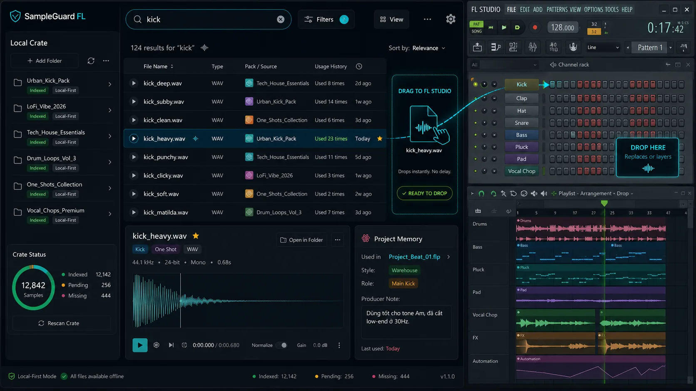
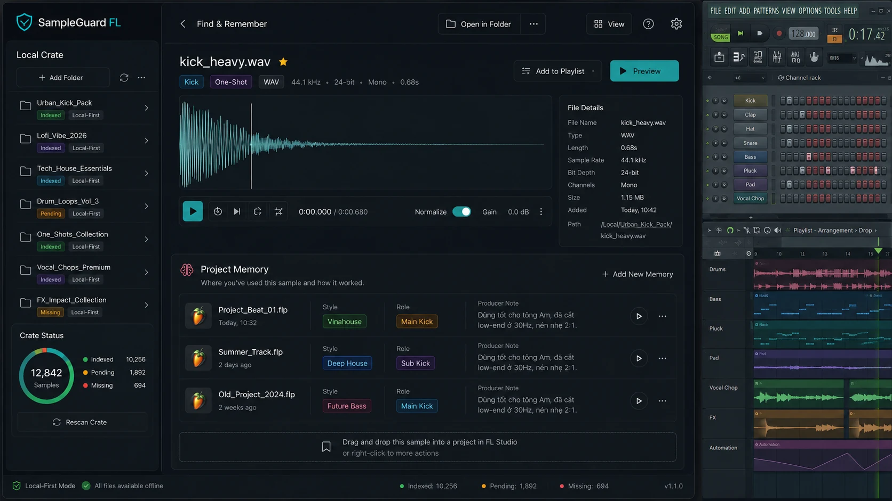
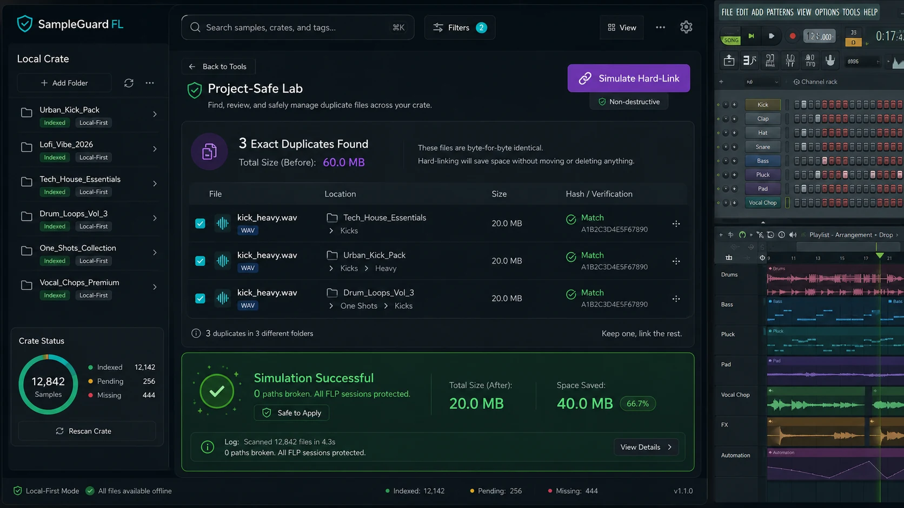
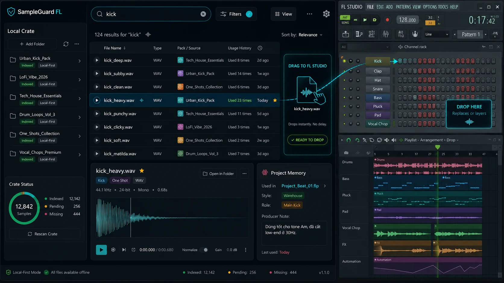

Tìm, nghe thử và kéo thả
Tìm sample trong thư viện cục bộ, nghe preview và kéo thả vào FL Studio mà không phải mở nhiều thư mục trong lúc đang làm nhạc.
Studio cá nhân về âm nhạc & thử nghiệm công cụ. Nơi lưu trữ hành trình làm nhạc, ảnh archive, ghi chú workflow, và các dự án kết hợp AI, tools & music.
MINH HIEU STUDIO là một góc nhỏ để lưu lại âm nhạc, Vinahouse, những hành trình sắp tới và vài mẹo hay trong quá trình làm nhạc.
Tôi làm trang này như một nơi để giữ lại những điều mình thấy đáng nhớ: vài bản demo, hình ảnh, công cụ nhỏ, kinh nghiệm làm việc và một số ghi chú thực tế khi dùng FL Studio.
Những nội dung đang thử nghiệm sẽ được ghi đúng trạng thái. Website không dùng dự án giả, nút giả hoặc thành tích chưa được xác minh để lấp chỗ trống.
Liên hệ trực tiếp: admin@studiominhhieu.com
Khu vực dành cho demo, bản phối, Vinahouse, DJ và quá trình làm việc với FL Studio. Mỗi mục chỉ gắn nút nghe khi đã có file hoặc đường dẫn thật.
Đây là nơi đăng các bản demo và bản phối theo từng giai đoạn. Mỗi bản khi được đưa lên sẽ ghi rõ tên, vai trò thực hiện, phiên bản, thời điểm và trạng thái như demo, đang hoàn thiện hoặc đã phát hành.
Gói dự án hiện chưa có file nhạc hoặc đường dẫn nghe công khai, nên website không tạo trình phát và không đặt nút “Nghe ngay” giả.
Vinahouse và dance music là hướng nội dung chính của studio. Phần này lưu lại cách chọn âm sắc, dựng arrangement, xử lý vocal, xây đoạn chuyển và chuẩn bị phiên bản phù hợp cho việc nghe hoặc biểu diễn.
Ảnh show, poster và video chỉ được đưa lên khi có đúng tư liệu gốc và chú thích được xác nhận.
Ghi lại quá trình tổ chức project, sample, preset và plugin để giảm thời gian tìm kiếm, hạn chế mất đường dẫn và giữ cho project cũ có thể mở lại sau thời gian dài.
Các mẹo có ích sẽ được tách thành bài ngắn trong mục Notes phía dưới để người xem có thể đọc từng vấn đề riêng.
Những công cụ được hình thành từ vấn đề thật trong quá trình làm nhạc. Trạng thái được ghi rõ để không biến prototype thành sản phẩm đã hoàn thiện.
SampleGuard FL là công cụ đang được phát triển để giải quyết ba việc: tìm sample nhanh hơn, ghi nhớ sample đã dùng theo từng project và kiểm tra an toàn trước khi xử lý file trùng.

Tìm sample trong thư viện cục bộ, nghe preview và kéo thả vào FL Studio mà không phải mở nhiều thư mục trong lúc đang làm nhạc.
Mô phỏng việc xử lý sample trùng trước khi áp dụng thật, giúp nhận diện file nào có nguy cơ đang được project cũ tham chiếu.
Ghi nhớ mối liên hệ giữa sample và project để hỗ trợ tìm lại đúng file, đúng vị trí và đúng ngữ cảnh khi mở lại một dự án cũ.
Đây là góc lưu lại các lần thử nghiệm AI và công cụ hỗ trợ workflow. AI được dùng để phân tích, so sánh phương án và triển khai phần việc đã được khoanh vùng — không tự quyết định thiết kế hoặc hướng đi của dự án.



Kho hình ảnh có thật đang nằm trong dự án: bộ hình định hướng AI & Music Tools và ba màn hình SampleGuard FL. Tư liệu biểu diễn cá nhân sẽ chỉ bổ sung khi có file gốc.
Ghi chú ngắn từ những vấn đề đã gặp thật khi làm việc với FL Studio, sample, plugin, project và AI.
Hai file trùng tên hoặc nghe gần giống nhau chưa chắc đều có thể xóa. Một project cũ vẫn có thể đang tham chiếu đúng đường dẫn của một file cụ thể. Trước khi dọn, cần kiểm tra vị trí file, project đang sử dụng và giữ một bản sao lưu có thể phục hồi.
Project không mở được có thể do plugin, preset, đường dẫn sample hoặc phiên bản phần mềm. Việc đầu tiên là giữ nguyên file gốc, kiểm tra autosave và cô lập thành phần gây lỗi trước khi reset, xóa hoặc thay đổi dữ liệu.
AI phù hợp để tìm lỗi, phân tích phương án và triển khai đúng phần việc được giao. Thiết kế đã duyệt, dữ liệu thật và hướng đi của sản phẩm không được tự ý thay đổi. Mọi chỉnh sửa cần nêu rõ file, phạm vi và kết quả kiểm tra.
Với project, plugin, sample và cấu hình máy, cần xem đúng danh sách file trước khi chạy thao tác hàng loạt. Không quét ra ngoài thư mục đã chỉ định; luôn giữ bản gốc hoặc bản sao lưu trước khi di chuyển, dọn dữ liệu hay cài lại hệ điều hành.
Góp ý về âm nhạc, FL Studio, SampleGuard hoặc nội dung trên website có thể gửi trực tiếp qua email.